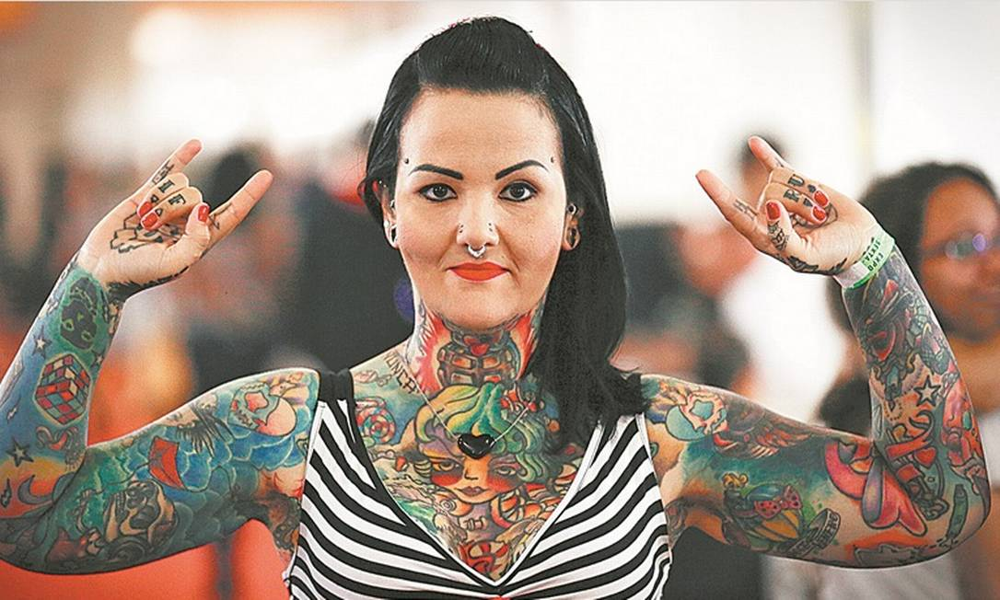
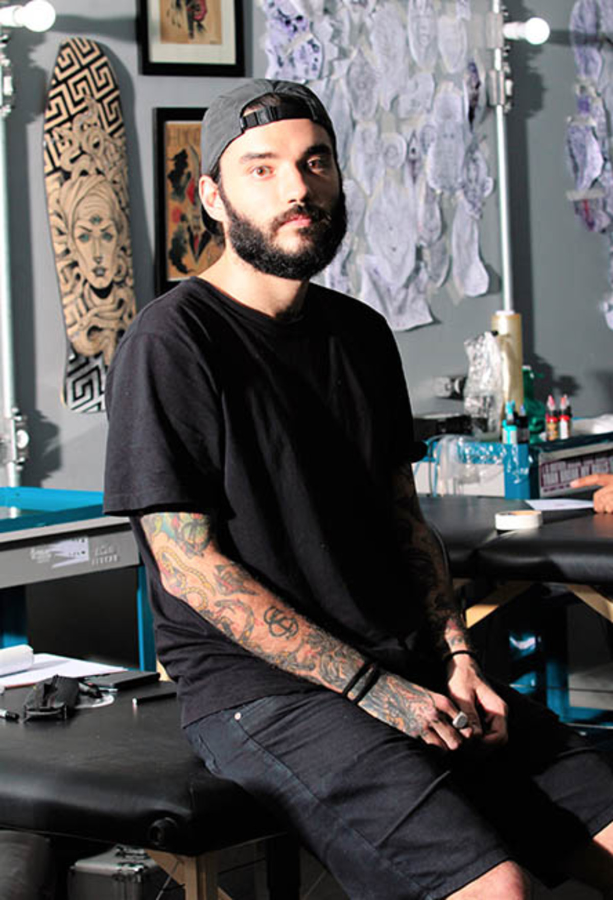

Sobre o Studio
João Silva
Especialista em realismo e sombreamento.
João é conhecido por sua técnica refinada em realismo, transformando imagens em tatuagens impressionantes e detalhadas.
Maria Costa
Estilo old school e colorido.
Maria tem uma paixão pelo estilo old school e colorido, trazendo uma vibe vibrante e clássica em cada obra.
Carlos Souza
Foco em pontilhismo e geométrico.
Carlos é especializado em pontilhismo e designs geométricos, criando tatuagens únicas e com uma estética precisa.
O Studio Tattoo é um espaço dedicado à arte da tatuagem, fundado com a missão de oferecer experiências únicas e personalizadas para cada cliente. Atuamos há mais de 10 anos no mercado, sempre com um olhar artístico, moderno e respeitando a identidade de quem nos procura.
Nosso ambiente é limpo, acolhedor e equipado com materiais esterilizados de alta qualidade. Acreditamos que tatuar é mais do que marcar a pele, é contar histórias. Por isso, nosso time de tatuadores é cuidadosamente selecionado para oferecer diferentes estilos: do realismo ao minimalismo, do old school ao geométrico.
Valorizamos a criatividade, o conforto e o atendimento humanizado. Venha conhecer nosso estúdio e transformar sua ideia em arte na pele, com segurança e excelência.